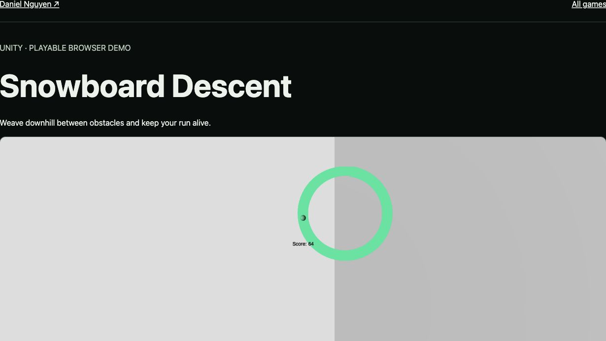

Unity
Snowboard Descent
Overview
A single-button downhill obstacle-dodging prototype with a visible trail, scoring and restart.
The action revolves around a short movement loop in which small input choices determine whether the character clears the next obstacle. The visible play space makes timing and position easy to follow. The overview presents the character, route, and obstacles together, while the available demo shows this version’s movement and restart behavior.
What it includes
- Timing-based movement
- Obstacle navigation
- Continuous traversal
